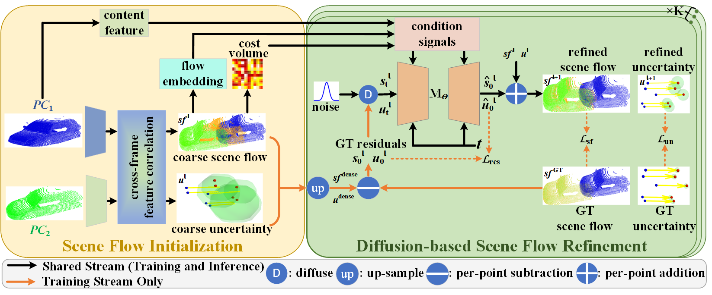
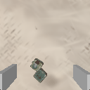

Group Lead
Dr Guangming Wang
Assistant Professor at the Cambridge-Ireland International Centre and Research Associate at the University of Cambridge; robot world models, physical AI, predictive 3D vision, and engineering automation.
Ireland
A bridge for predictive physical intelligence: world models, 4D robot vision, generative dynamics, and robot learning across Cambridge and Ireland.
Purpose
This group develops robot world models that forecast how 3D scenes, objects, and robot states evolve under time and action. The aim is practical: make prediction useful for planning, manipulation, simulation, and safe deployment.
The group is designed as an international collaboration node, connecting physical AI work in Cambridge with research activity in Ireland, including the University of Galway ecosystem.
Temporal robot vision for dynamic, multi-view, and action-conditioned scenes.
Point clouds, neural fields, Gaussian representations, and flow-based dynamics.
World models evaluated through robot tasks, not only offline prediction metrics.
Group Members
Group Lead
Assistant Professor at the Cambridge-Ireland International Centre and Research Associate at the University of Cambridge; robot world models, physical AI, predictive 3D vision, and engineering automation.
Cambridge Student
PhD student at Cambridge.
Cambridge Student
PhD student at Cambridge.
Cambridge Student
MPhil student at TUM.
Cambridge Student
PhD student at Cambridge.
Cambridge Student
MPhil student at TUM.
Cambridge Student
Undergraduate student at Cambridge.
Cambridge Student
Undergraduate student at Cambridge.
Cambridge Student
PhD student at Cardiff.
Cambridge Student
PhD student at Tsinghua University.
Cambridge Student
PhD student at Tsinghua University.
Group Co-Lead
Postdoctoral Research Associate at the University of Cambridge; 3D reconstruction, generative models, physical reasoning with 3DGS, and robotics.
Group Co-Lead
PhD Candidate in the CV4DT Research Group.
Cambridge Student
PhD student at Cambridge.
Researcher
PhD Candidate in the CV4DT Research Group.
Cambridge Student
Visiting student at Cambridge.
Cambridge Student
PhD student at TUM.
Cambridge Student
PhD student at Oxford.
Advisory Board

Advisor
Laing O'Rourke Associate Professor in Construction Engineering at Cambridge; intelligent underground construction and monitoring.

Advisor
Full Professor of Computer Science at ETH Zurich and Director of the Microsoft Mixed Reality and AI Lab in Zurich; 3D computer vision, robot vision, SLAM, and semantic scene understanding.

Advisor
Cheryl and John Neerhout, Jr. Distinguished Professor and Distinguished Professor of Mechanical Engineering at UC Berkeley; adaptive control, digital control, mechatronics, and robotics.
Representative work



Join
Relevant backgrounds include embodied AI, video prediction, 3D generative models, robot learning, reinforcement learning, simulation, and real robot experimentation.
Contact